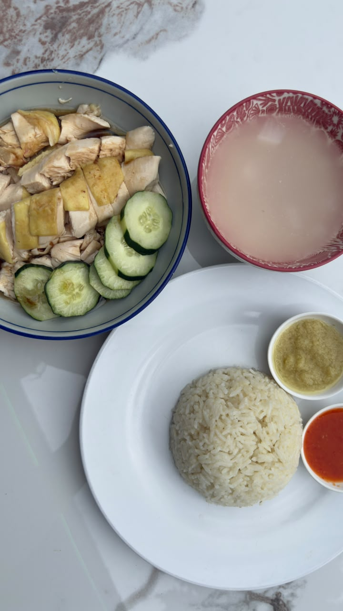
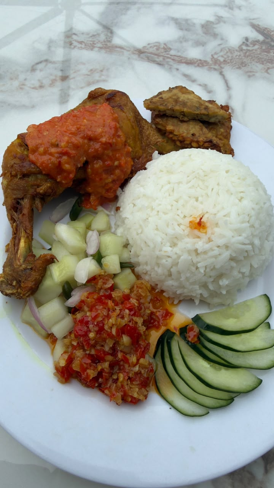
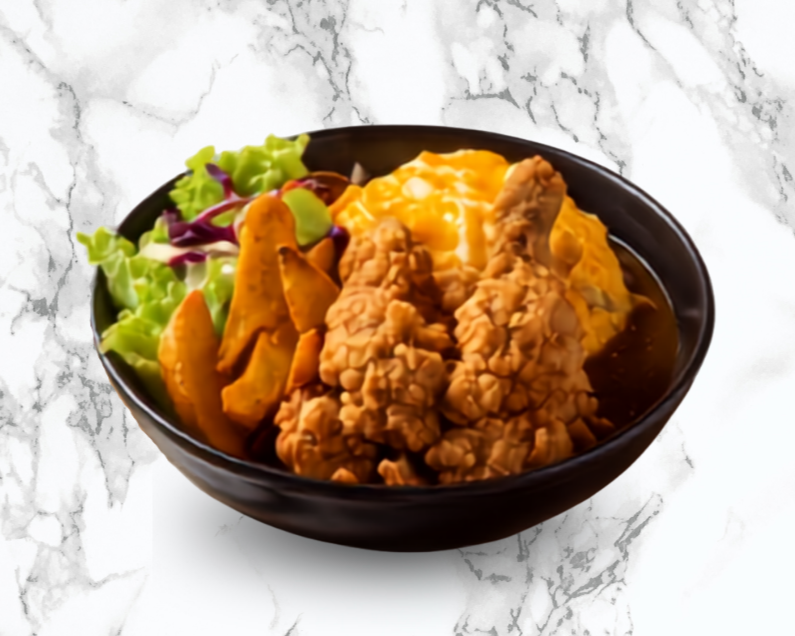
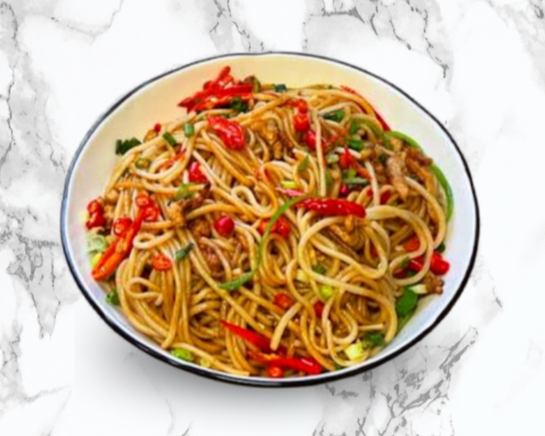

海南鸡饭EXPLORE THE MENU
一桌子的选择。
饭、面、小吃、烧烤、甜品到啤酒；各自点喜欢的，一起坐下来慢慢吃。
从热腾腾的啦啦米粉、香口猪扒，到寿司、煎饺、肉骨茶—OTS 为大家准备了各式各样的选择。不管是一个人来吃，还是一群人聚餐，都能找到喜欢的味道。
FOOD CATALOG
想吃的，这里都有。
 老三椰浆饭
老三椰浆饭

印尼炸鸡饭
鮨匠 Shokunin Nihonryori
中国江西小炒 烧鸡翅
烧鸡翅
 面粉糕 炸虾面
面粉糕 炸虾面